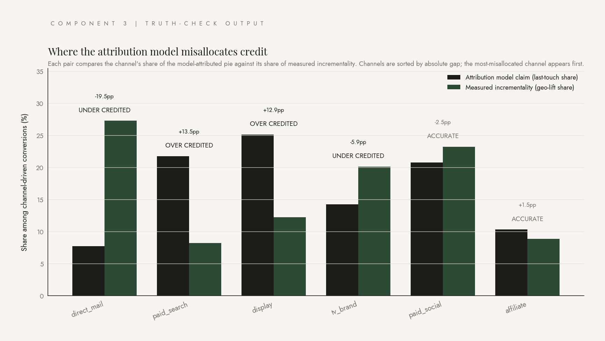

Where the attribution model and reality disagree.
A working prototype that validates marketing attribution against measured causal incrementality. Synthetic data with known ground truth. Geo-lift estimation with cluster-robust standard errors. A truth-check that exposes which channels are over-credited, under-credited, or accurate within measurement noise. Self-evaluation with precision, recall, and F1, because attribution decisions are categorical and should be graded as such.

Hi. What you're looking at is a tool that does something most marketing teams don't: hold their attribution model accountable to causal reality. Attribution is the bookkeeping that says "this channel drove that conversion." Incrementality is the harder question of whether the conversion would have happened anyway. Most teams treat attribution as if it answered both. It doesn't.
The chart up top is the entire project compressed into one image. The charcoal bars are what a last-touch attribution model claims each channel contributed. The forest-green bars are what a geo-lift experiment actually measured. Where the two bars disagree, the model is misallocating credit. Direct mail on the far left is the most-misallocated channel in this run. Getting only 7.7 percent of credit when reality says it deserves 27.
Below this panel, four headline numbers. Below that, six cards. Each card is a self-contained walkthrough of one piece of how the system works, written in this same plain-language voice. There is no required order. Click whatever looks interesting.
Six components, one validation pipeline.
Synthetic data builds the answer key. The geo-lift engine recovers truth from public data alone. The comparison layer flags where the attribution model and reality diverge. The narrative layer translates the gap into plain English. The self-evaluation harness grades the truth-checker the same way you'd grade a clause classifier: precision, recall, F1, threshold sweeps, calibration.
Synthetic Data
50 cities, 26 weeks, 100,000 users. Six channels with known ground-truth incrementality patterns baked in. Dark periods structured so the geo-lift engine has natural-experiment variation to exploit.
View pipelineGeo-Lift Engine
Two-way fixed-effects panel regression with cluster-robust standard errors, hand-rolled in numpy. Recovers per-channel incrementality from the public data alone. The answer key stays sealed.
See the mathTruth-Check
Channel-by-channel comparison of model claim against measured incrementality. Three-class output. Live threshold slider on this page lets you see how the labels move as the decision boundary changes.
Try the sliderNarrative
Claude Opus 4.7 turns the comparison data into an executive summary. Style rules baked into the system prompt. Every numeric claim traces back to the underlying data.
Read the reportSelf-Evaluation
Precision, recall, F1, confusion matrix, threshold sweep, calibration check, and Claude-graded narrative correctness. The validator validated the same way clause classifiers are validated in legal AI.
See the scoresMethodology Notes
What I would change at AmEx scale. Single-channel synthetic control. Out-of-family LLM judges for narrative eval. Larger-N evaluation runs. Production data connectors and audit trails.
Read the notes